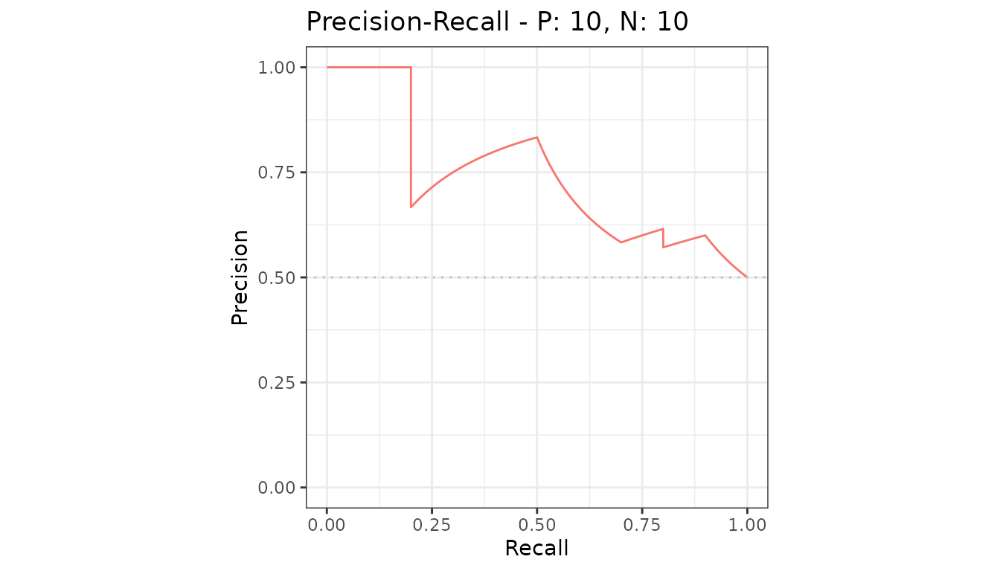
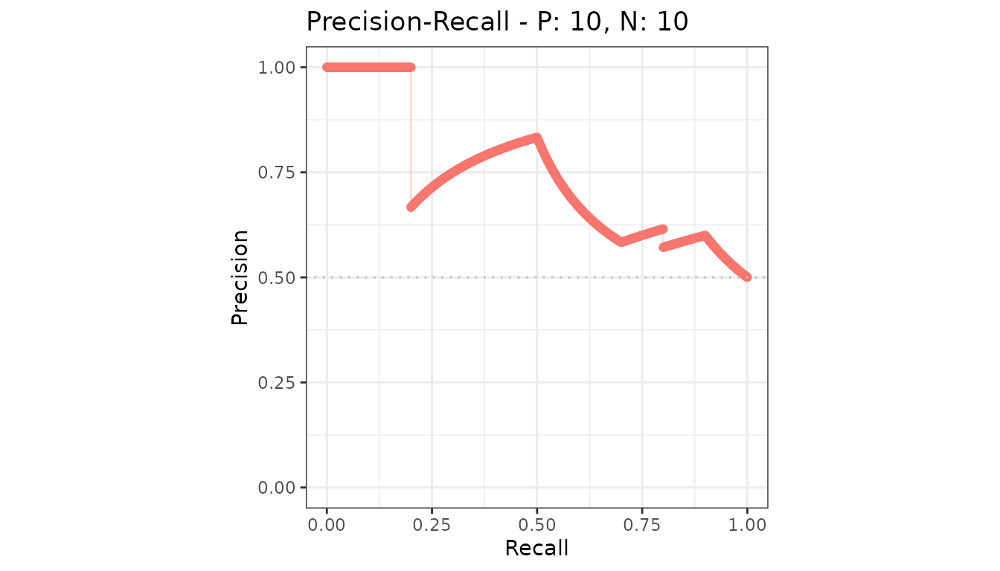

Every precrec object knows how to draw itself two
ways.
plot or autoplot
| Function | Draws with | Use it when |
|---|---|---|
plot() |
base graphics | You want a picture with no dependencies |
autoplot() |
ggplot2 |
You want to restyle, relabel or combine the result |
plot(curves)autoplot() returns a ggplot object, so
anything you can do to a plot from ggplot2 you can do to
this one.
autoplot(curves)
Choosing what to draw
The second argument picks the curve or the metric.
autoplot(curves, "PRC")
For mode = "basic" objects it names metrics instead, one
panel each. See basic metric
plots.
Arguments both functions share
| Argument | Effect |
|---|---|
type |
"l" lines, "p" points, "b"
both |
show_cb |
Draw the confidence band around an average curve |
raw_curves |
Draw every test set instead of the average |
show_legend |
Show or hide the legend |
reduce_points |
Thin the points before drawing; on by default |
autoplot(curves, "PRC", type = "b")
The four pages
- ROC and precision-recall curves - the main plot
- Basic metric plots - metrics against normalized rank
- One metric against another - free-form pairs
- Confidence bands and partial curves - the two variations
And customizing plots for changing what comes out.